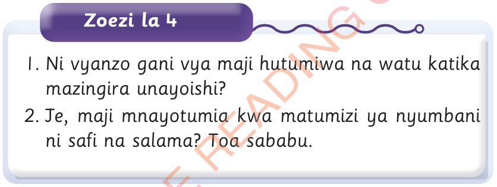

1.Ni vyanzo gani vya maji hutumiwa na watu katika mazingira unayoishi?
2.Je, maji mnayotumia kwa matumizi ya nyumbani ni safi na salama?
Toa sababu.
Zoezi la 4

1.Ni vyanzo gani vya maji hutumiwa na watu katika mazingira unayoishi?
2.Je, maji mnayotumia kwa matumizi ya nyumbani ni safi na salama?
Toa sababu.